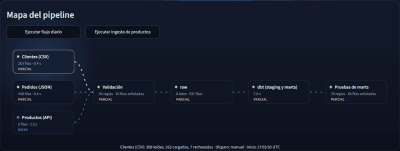
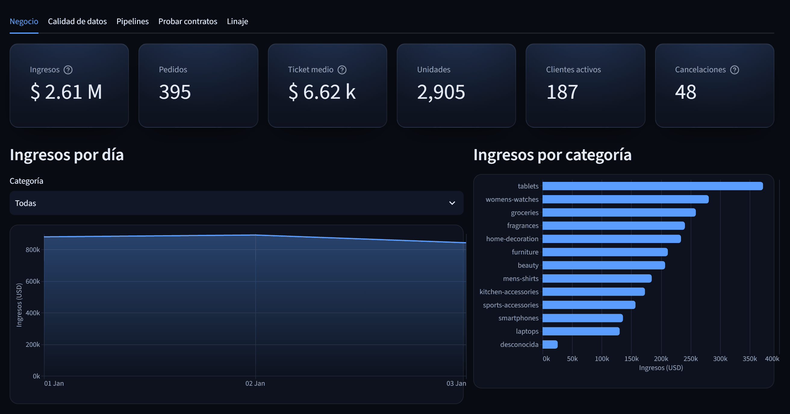
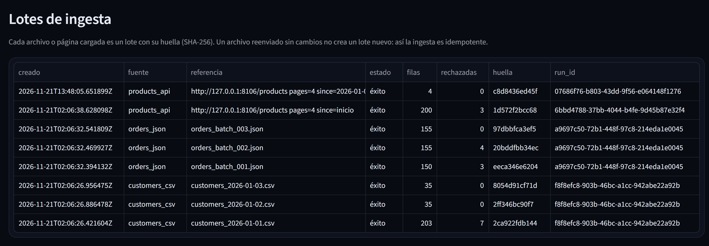
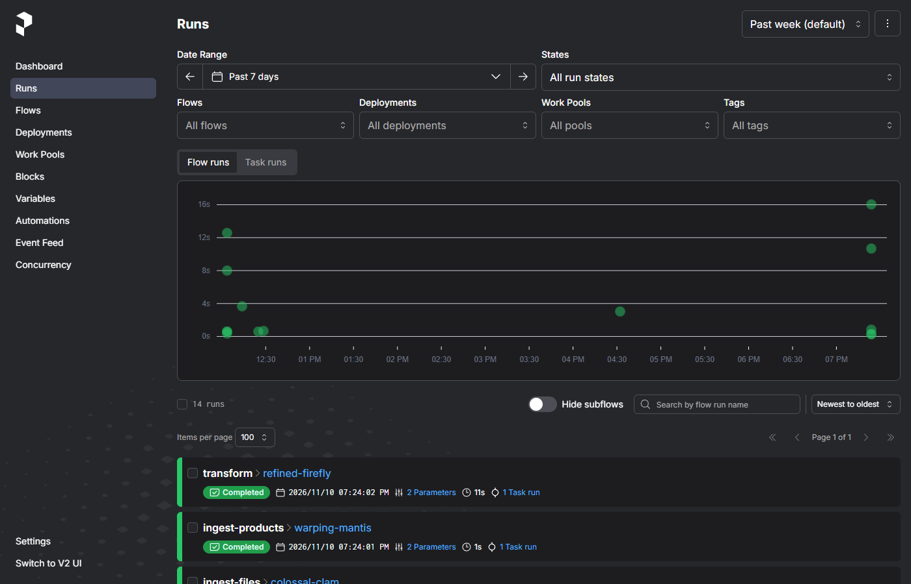

Ingeniería de datos de punta a punta
De archivos sueltos a indicadores en los que se puede confiar.
CSV, JSON y una API REST paginada entran por contratos de validación, se cargan de forma idempotente, se modelan con dbt y salen como indicadores por una API de solo lectura. Todo se levanta con un comando y se verifica en CI en cada push.
Seis registros reales cruzan las capas
Desliza: la animación avanza y retrocede con el scroll. Los registros salen de
data/samples y sus defectos están anotados en manifest.json.
- 1 · Fuentes. Llegan sin tipos y en dos formatos: líneas de CSV de clientes y pedidos en JSON. Un mismo pedido puede llegar en dos lotes.
- 2 · Validación. Los contratos de Polars revisan cada fila. Las inválidas no se pierden: van a cuarentena con el campo y el motivo.
- 3 · raw. Lo válido se carga sin modificar (solo se añaden filas), cada fila con la huella SHA-256 de su lote. Un archivo reenviado con otro nombre pero el mismo contenido no crea un lote nuevo.
- 4 · staging. dbt tipa y normaliza. Si un pedido llega dos veces, gana la versión más reciente: O000065 pasa de paid a cancelled.
- 5 · marts. El modelo estrella: dimensiones con historial SCD2 y hechos por línea de pedido. Las ventas diarias se concilian con los hechos en una prueba de dbt.
Fuera del flujo
C00003,Sebastián,Rodríguez,sebastian.rodriguez.3@example.com,Medellín,CO,retail,2024-11-13
customer_id C00003 · city Medellín · segment retail · signup 2024-11-13
✓ contrato cumplido
lote sha256 2ca922fd…
→ dim_customer (versión vigente, SCD2)
C00009,Natalia,Peña,natalia.pena.9.at.example.com,Guadalajara,MX,…
cuarentena · email: «email sin @»
{"order_id":"O000231","items":[{"product_id":162,"quantity":0,…}]}
cuarentena · items.quantity fuera de rango: 0
{"order_id":"O000065","status":"paid","updated_at":"2026-01-01T15:56:00Z",…}
lote sha256 eeca346e…
versión anterior: se descarta
{"order_id":"O000065","status":"cancelled","updated_at":"2026-01-03T19:53:00Z",…}
order_id O000065 · status cancelled · updated_at 2026-01-03 19:53 UTC
lote sha256 97dbbfca…
✓ versión más reciente
→ fct_order_items
35 filas · sha256 2ff346bc…
lote omitido: mismo contenido que customers_2026-01-02.csv
fct_daily_sales
se concilia con fct_order_items (prueba dbt)
En números
- 304pruebas Python: unitarias, de integración contra PostgreSQL, de contrato y E2E
- 39pruebas de dbt, con 5 conciliaciones
- 91 %de cobertura de líneas y ramas (el CI exige ≥ 90 %)
- 37defectos sintéticos que el pipeline debe detectar, ni uno más ni uno menos
- 9ADRs con sus alternativas descartadas
Medido en el CI del 2026-11-10 (ubuntu-24.04, Python 3.13, PostgreSQL en contenedor).
Qué demuestra
Calidad de datos
Contratos por fuente, cuarentena con motivo y presupuesto de errores por lote. Las columnas nuevas de una fuente van a
_extra.Idempotencia
Huella del contenido de cada lote y de cada registro, y marcas de agua con solapamiento. Repetir una carga no duplica nada.
Resiliencia
Reintentos que respetan
Retry-After, con espera exponencial aleatorizada. Carga atómica por lote y bloqueo por fuente.Orquestación real
Prefect 3: despliegues programados, reintentos solo ante fallos transitorios y disparo por API.
Modelado analítico
Modelo estrella con SCD2 que reconstruye cualquier fecha pasada y admite versiones tardías. El modo incremental da lo mismo que reconstruir todo.
Mínimo privilegio
Un rol por componente. La API solo lee
martsyops, y el panel no tiene credenciales de la base de datos.
Capturas del panel





Pruébalo en un comando
Requisitos: Windows con Docker Desktop abierto y Git. El script crea .env con secretos
aleatorios, levanta el stack, ejecuta el flujo diario y deja el panel listo.
git clone https://github.com/JuanSGarciaC/datapulse.git cd datapulse .\scripts\demo.ps1 .env creado con secretos aleatorios (no se versiona). # … salida de docker compose up --build … Esperando a que el worker y Prefect estén listos... # … ingesta + dbt del flujo diario … DataPulse está listo: Dashboard http://localhost:8501 API (docs) http://localhost:8000/docs (clave en .env: DATAPULSE_API_KEYS) Prefect http://localhost:4200 Para apagarlo: docker compose down
Las líneas sin # son las que imprime scripts/demo.ps1; lo comentado resume la salida de Docker y del flujo.